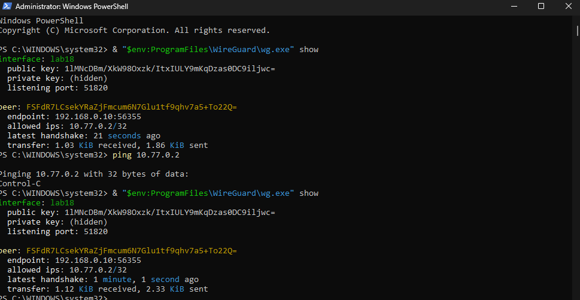

VERIFIED
Safety Number
Huella criptográfica comparada presencialmente con el compañero mediante QR/dígitos.
Verificación de Safety Number presencial, modelo de amenazas y metadatos de Signal, despliegue de túnel P2P con WireGuard y análisis criptográfico de E2EE frente a mandatos de acceso excepcional.
WireGuard oficial Windows ↔ iOS · AllowedIPs /32 estricto · Payload cifrado ChaCha20-Poly1305.
resumen ejecutivo de control y seguridad
Huella criptográfica comparada presencialmente con el compañero mediante QR/dígitos.
El servidor Signal enruta sin conocer la identidad del remitente en el sobre cifrado.
Sin full-tunnel; tráfico confinado exclusivamente al peer autorizado del laboratorio.
1.12 KiB recibidos y 2.33 KiB transmitidos con ping ICMP exitoso entre interfaces.
verificación presencial de clave de identidad
El Safety Number fue contrastado presencialmente con un compañero utilizando los 60 dígitos numéricos y el código QR nativos provistos por el cliente oficial de Signal (Signal Protocol). Una vez confirmada la coincidencia exacta de ambos bloques criptográficos, la conversación fue marcada en el cliente como Verified (mostrando la opción de Clear Verification en pantalla).
Si el Safety Number difiere entre ambos teléfonos, el protocolo alerta de dos posibles vectores de riesgo:
 🔍 Clic para ampliar
🔍 Clic para ampliar
Cliente oficial de Signal (iOS). Se verificaron los 12 bloques de 5 dígitos (38114...18083) y el código QR presencialmente con el compañero. Sin números de teléfono expuestos (cumpliendo las reglas del lab).
análisis de fuga de metadatos frente a confidencialidad
| Elemento / Parámetro | Estado en Servidor | Mecanismo Criptográfico / Razón Técnica |
|---|---|---|
| Texto del mensaje | SERVIDOR NO LEE | Cifrado E2EE mediante el Signal Protocol (Double Ratchet + Curve25519 + ChaCha20-Poly1305 / AES-GCM). Solo los dispositivos finales poseen las claves para descifrar. |
| Que la cuenta existe | SERVIDOR SÍ SABE | La cuenta está registrada en la base de datos de Signal, mapeada a un número de teléfono o username tokenizado para permitir el contacto inicial. |
| Cuándo se conectó el dispositivo | SERVIDOR SÍ SABE | El servidor registra las aperturas y cierres de sockets de red (TCP / TLS / WebSocket) para entregar mensajes en cola o push notifications. |
| Tamaño aproximado | SERVIDOR SÍ SABE | La longitud en bytes del paquete de red es visible en tránsito para el router y servidor, aunque Signal aplica padding aleatorio (PKCS#7) para reducir fingerprinting de patrones de longitud. |
| Quién envió (Sealed Sender) | SERVIDOR NO LEE | Con Sealed Sender, la identidad del emisor viaja encapsulada dentro del sobre cifrado con un token de entrega. El servidor solo sabe a qué destino entregar el payload, no quién lo emitió. |
| IP mientras está conectado | SERVIDOR SÍ SABE | La dirección IP pública de origen es técnicamente requerida por la capa de transporte IP para sostener la sesión de socket TCP activa en tiempo real. |
| Lista de contactos / grupos | SERVIDOR NO LEE | Los miembros de grupos usan claves de grupo simétricas y credenciales anónimas. El descubrimiento de contactos se realiza con enclaves SGX (Private Contact Discovery) y Secure Value Recovery. |
El repositorio legal de Signal Big Brother muestra las respuestas oficiales de Signal ante citaciones y órdenes judiciales federales (subpoenas de tribunales de EE.UU.).
Síntesis formal solicitada para el cierre de la sesión práctica:
El servidor no puede leer el texto del mensaje, los miembros de grupos, la libreta de contactos ni el remitente con Sealed Sender, pero sí sabe que la cuenta existe, los timestamps de socket y la IP pública efímera mientras está conectado.
topología peer-to-peer y control estricto de rutas
AllowedIPs = 10.77.0.2/32 para evitar full-tunnel accidental.
10.77.0.1/32 | Listening Port: 51820
1lMNcDBm/XkW98Oxzk/ItxIULY9mKqDzas0DC9ilJwc=
(hidden) — Resguardada localmente.
10.77.0.2/32 | Endpoint: 192.168.0.10:56355
FSfdR7LCsekYRaZjFmcum6N7Glu1tf9qhv7a5+To22Q=
192.168.0.0/24
Demostración del aislamiento y encapsulamiento criptográfico del protocolo Noise:
192.168.0.3 y 192.168.0.10, junto con el volumen y frecuencia de paquetes.
10.77.0.1 ↔ 10.77.0.2), incluyendo las solicitudes y respuestas de eco ICMP (ping).
Finalizadas las pruebas de handshake y verificación de bytes transferidos (>0 KiB), el túnel fue detenido y la interfaz lab18 fue desactivada en ambos extremos, garantizando que no queden puertos UDP de escucha abiertos ni servicios expuestos de forma permanente.
capturas de ejecución de terminal y logs de sesión

🔍 Clic para ampliarlab18, handshake hace 21s / 1m 01s, 1.12 KiB recibidos / 2.33 KiB enviados y comando ping 10.77.0.2. Clave privada oculta.
 🔍 Clic para ampliar
🔍 Clic para ampliar
192.168.0.10:56355, Receiving handshake initiation, Sending handshake response y destrucción/creación de keypairs.
 🔍 Clic para ampliar
🔍 Clic para ampliar
peer(1lMN...ljwc) y envío de paquetes keepalive hacia la laptop.
análisis de forward secrecy, acceso excepcional y comparación de ventures
La forward secrecy (FS) significa que el compromiso de una clave actual no debería permitir descifrar automáticamente las comunicaciones pasadas. En Signal, las claves se actualizan durante la conversación, por lo que una clave comprometida no debería revelar todo el historial anterior. Sin embargo, si el atacante obtiene acceso al teléfono desbloqueado, puede leer el historial que esté almacenado en texto plano dentro del dispositivo.
La post-compromise security (PCS) se refiere a la capacidad de recuperar la seguridad después de una intrusión. Si el atacante pierde el acceso y Signal puede continuar actualizando las claves mediante nuevos intercambios, los mensajes futuros pueden volver a estar protegidos. Esto depende de que el dispositivo deje de estar comprometido y de que las identidades puedan verificarse nuevamente mediante el Safety Number. La PCS no borra automáticamente el historial que el atacante ya haya copiado.
WireGuard también utiliza claves de sesión efímeras durante sus handshakes, por lo que el compromiso de una clave no debería revelar todas las sesiones anteriores. No obstante, WireGuard protege principalmente el trayecto entre dos peers. Si uno de los endpoints está comprometido, el atacante puede observar el tráfico después de que sea descifrado en ese dispositivo.
Un mandato de acceso excepcional contra Signal tendría que modificar el protocolo, obligar al proveedor a guardar claves adicionales o introducir una forma especial de descifrar mensajes. Eso debilitaría la separación entre las claves y aumentaría el riesgo de abuso o filtración. El artículo Keys Under Doormats explica que este tipo de acceso excepcional agrega complejidad y puede debilitar propiedades como la forward secrecy, afectando potencialmente a todos los usuarios.
En WireGuard, el proveedor del túnel normalmente no puede leer el contenido protegido sin las claves privadas de los peers. Para crear un acceso excepcional tendría que agregar un nuevo peer, obtener una clave privada, modificar la configuración o comprometer uno de los endpoints. En ese caso, el acceso no sería una función transparente del protocolo, sino una modificación de la configuración o una intrusión en un dispositivo.
Para nuestro venture Pactrail: Tor oculta el origen de red de las partes frente a observadores del escrow, Signal protege la mensajería y acuerdos confidenciales con E2EE frente al servidor, y WireGuard cifra el enlace de transporte entre peers de validación sin brindar anonimato.